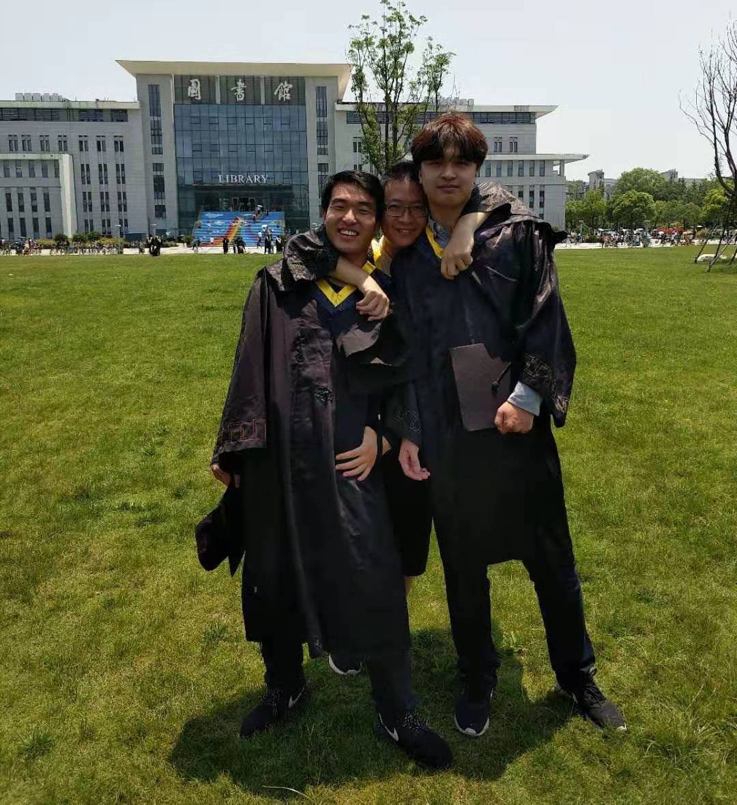

Zihao(Lee) Wang
Data Scientist
Basic info
- Zihao Wang/male/25yo
- boone2333@outlook.com
- +45 5261 8995
- Skelhøvej 25, Lyngby
Languages
- profecient
- native
- modul 1
Skills
Pics

Profile
I am a passionate coder, who loves to face new challenges and eager to improve himself. In addition to my university studies, I have been developing practical skills as a data scientist for around 2 years with a number of related projects, which have shown me how best to collaborate with team members and take responsibility for my work.
Education
-
M.Sc. in Computer Science and Engineering
Technical University of Denmark▪ Academically, I resides at the intersection between computer technology and data science. On one hand, I continued the algorithmic study of computer science. On the other hand, my interest in machine learning and computer vision grows exponentially daily.
▪ In life, I immerse myself in the multicultural environment, which have shown me how to best collaborate with team members and take responsibility for my work.
▪ Core courses:
Course name Mark(/12) Distributed Systems 12 Algorithmic techniques for modern data models 10 Deep learning 12 Advanced machine learning 4 Non-linear signal processing 12 Algorithms for Massive Data Sets 7 Computational tools for data science 10 -
B.Sc. in Computer Science
Nanjing University of Posts and Telecommunications▪ Freed from high school, I was able to spend more time on my personal interests. I also volunteered for one year helping seniors at Young Volunteers Association.
▪ Meanwhile, I practiced embedded system development on multiple platforms like STM32 and Arduino. I constructed two middleware systems and familiarized myself with low-level development.
▪ Core courses:
Course name Mark(/5) Advanced language programming 4.7 Operation system 2.7 Data structure and Algorithms 4.1 Computer Communications and Networks 3.7 Database systems 4.4 Compiler principles 4.1 Computer Organization 4.2 Advanced mathematics 3.7 Linear Algebra and Analytic geometry 3.1 Probability and Statistics 3.7
Experience
-
Data Scientist Internship
Novo Nordisk A/S -
Teaching Assistant of Introduction to Machine Learning and Data Mining DTU Compute
- The best learning approach is through teaching. I love explaining the intricate concepts to the fellow students with my own interpretation and enjoy the delight on their faces the moment they grasp the ideas. And judging from the TA scores, the feeling is mutual.
-
Short-term placement at SoC design department IPGoal Microelectronics
- I received technical training for the design and verification of NFC model and managed to play around with some small projects. Though personally I am not too proud of this experience for no solid achievement had been made during the period by me.
Projects
-
Medical object detection
Devised and implemented a fully automated pipeline from raw data file to accurate masking and counting. The aim of the project is to alleviate the workload of product quality control.
Master thesis
OpenCV, SciKits, Pytorch, AWS -
Unsupervised Image classification
My responsibility is to deliver a look-up table for similarity check. I broke the need into two parts: feature vector extraction and a two-layer clustering.
Group project of size 2
transfer learning, GMM and k-d tree -
Signal filter
End-to-end development of an automatic sample filter for impurity check.
Individual project
XGBoost, kSVM, Bayesian Optimization, Streamlit and Docker -
Smarter learning through knowledge augmentation Paper
Visualized multi-headed entity linker attention and re-interpreted the validity of knowledge distillation in current NLP models such as KnowBert.
Course project of 3 people
BERT, KnowBERT, AllenNLP -
Latent variable model Paper
We managed to infer and implement NMF with EM algorithm and Gibbs sampler respectively from scratch and utilize them on a face reconstruction task.
Course project of 3 people -
PageRank Paper
We managed to implement a search engine on Wikipedia with PageRank calculated by MapReduce. The output is a weighted graph presenting all related name entities and their interrelationships stored in a SQLite3 database for fast query.
Course project of 3 people -
Intelligent fitness system Index
Designed and built an integrated middleware consisting of SoC equipped with various sensors, remote database and mobile application. This system is designed to deliver the vital reads during training and provide guidance accordingly.
Group project of size 2
Java, Arduino, C, PHP
Publishment at 2nd EAI International Conference on Industrial Technologies and Applications.
2nd prize of the 3rd 3S Cup National College Sdudent Internet of Things Technology and Application Competition.
3rd prize of the 18th "Innovation Cup" Academic Competition.